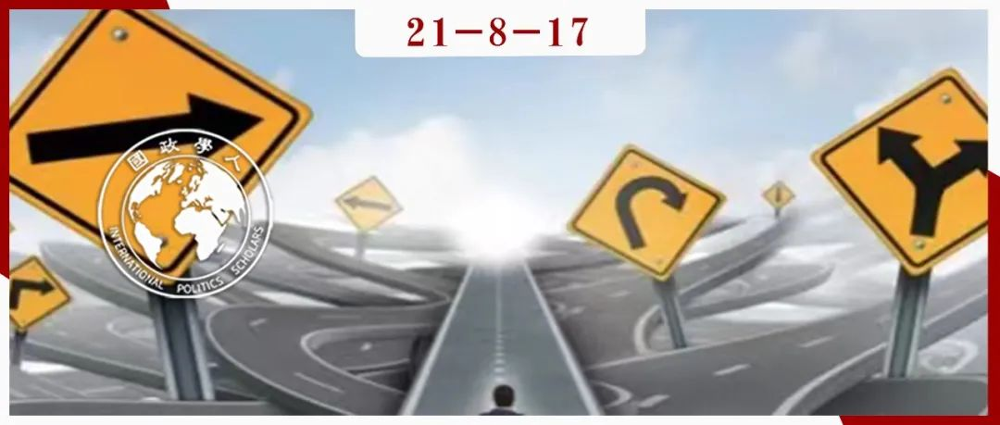

收录于合集 #理论研究 96个

作品简介
作者： Brian C. Rathbun，南加州大学多恩西夫文理学院（Dornsife College of Letters, Arts and Sciences, University of Southern California）国际关系学教授，热衷于把政治、社会和认知心理学融入国际关系研究，主要研究兴趣包括国际关系理论、国际组织、国际合作、意识形态与对外政策、政治心理学、谈判与议价等。
编译： 阮镇炜（国政学人编译员，伦敦大学学院安全研究硕士）
来源： Rathbun,B.(2007) ‘Uncertain about Uncertainty: Understanding the Multiple Meanings of a Crucial Concept in International Relations Theory’, International Studies Quarterly , 51(3), pp. 533-557
归档： 《国际关系前沿》2021年第8期，总第35期

内容提要
“不确定性”的作用是国际关系研究中每一个主要研究传统的核心。但是，“不确定性”有多种不同的含义，并且每一个范式在一定程度上对这个概念有独特的理解。这些含义往往是不明显的。作者认为，现实主义者把“不确定性”定义为无政府状态和掠夺的可能性所带来的 恐惧 ；理性主义者将其定义为“ 无知 ”（非贬义），这种“无知”在不完全信息和强制实施的讨价还价博弈中是难以摆脱的；认知主义者将其定义为复杂国际环境下决策的“ 迷惑 ”（非贬义）；而建构主义者则将其定义为社会建构世界的“ 非决定性 ”，如果没有了规范和身份，这个由社会建构的世界则会缺乏意义。作者阐述了这些对“不确定性”的不同理解如何为各种范式对学习的定义、对信号的不同期望以及国际组织的功能提供必要的微观基础。这在概念、方法论和理论上都会有收获。对于掌握每个范式的逻辑、区分各个范式以及促进范式间的对话而言，理解“不确定性”是很有必要的。
文章导读
“不确定性”的作用是国际关系研究中每一个主要研究传统的核心。现实主义者、理性主义者、认知主义者和建构主义者都在他们的理论中使用了这个概念。“不确定性”可以说是解释国际政治独特互动方式的最重要因素。然而，如果仔细考察，就会发现这些范式对“不确定性”有着不同的理解。 本文旨在对“不确定性”进行系统性的概念化和分类。
在国际关系的四个范式中，“不确定性”有着多种不同的含义。作者认为，现实主义者把“不确定性”定义为无政府状态和掠夺的可能性所带来的 恐惧 （fear）；理性主义者将其定义为“ 无知 ”（ignorance，非贬义），这种“无知”在不完全信息和强制实施的讨价还价博弈中是难以摆脱的；认知主义者将其定义为复杂国际环境下决策的“ 迷惑 ”（confusion，非贬义）；而建构主义者则将其定义为社会建构世界的“ 非决定性 ”（indeterminacy），如果没有了规范和身份，这个由社会建构的世界则会缺乏意义。以上含义往往是隐晦的。通过揭示这些含义，我们可以更好地理解国际关系学术研究中的差异。事实上，作者认为如果不理解“不确定性”，我们则难以做到上一点。
本文会有概念、方法论和理论上的收获。具有清晰、准确含义的术语对促进学术对话而言总是最好的，尤其是涉及到对国际关系研究如此重要的一个概念。然而，这不仅仅是一个分类的尝试。在多数情况下，不理解范式中关于“不确定性”的假定，就难以理解范式，因为“不确定性”这个概念为范式提供了微观基础。对“不确定性”的不同理解是理解范式间差异的关键。
01
客观 vs 主观：感知与歧义
理性主义和现实主义认为数据是毫无歧义的和客观的，而建构主义和认知主义认为数据的呈现是模棱两可的、主观的。对理性主义和现实主义而言，行为体会对相同的刺激有相似的感知（perception）和解读（interpretation），而对认知主义和建构主义而言，这些刺激会通过信仰体系、身份、规范、形象或其他因行为体和国家而异的捷思（heuristics，又译“启发法”）而被过滤。如果信息可以不证自明，则无需以有意义的方式去处理。因此，理性主义和现实主义认为，国家的决策相对来说不成问题，它们在经验上经常被忽视，并且没有被分析与评估。现实主义和理性主义都有一个不明显的准确性标准，这个标准与其假定是相符的，即国家可以客观地解读从周围环境涌入的信息和信号（signals）。
一些人或许认为理性主义者强调主观性，但从阐释性的角度而言并非如此。当理性主义者在谈及“不同的感知”时，他们在谈论的是关于谈判或敌对情形时对对方所处的战略情境所持有的不同想法，而这都是因为“私有信息”（private information）。“感知”是行为体缺乏完全信息时所拥有的东西；“信仰”则没有规范的内容（normative content）。一般而言，处于相似处境的行为体会以相同的方式解读和融入额外的信息。在这些范式中，国家至少可以确定他们所看见的东西，即使这些范式在关于“国家应作出恰当回应”方面有着不同结论。
这并不意味着“不确定性”不重要。理性主义和现实主义中的“不确定性”在于国家缺乏关于他国意图、利益和实力的信息。这在理性主义的理论中被称为“信息的非对称性”或“信息的不完全性”,又或“战略不确定性”。它是一个数量问题（缺乏信息的数量），而非阐释性问题（分析）。在现实主义和理性主义中，这种信息的缺失带来了严重挑战，因为无政府状态下的国际环境缺乏国家协商的强制实施机制，同时也缺乏抵抗侵略的外部保护人，所以给合作带来了问题。
与现实主义和理性主义不同，认知主义和建构主义把感知问题化，因此，它们在国际政治的不确定性中加入了一个额外的元素，那就是“解读”。在其理论中，信息处理是核心。由此，“不确定性”带来的问题是“歧义”，而这导致国家缺乏行动上的决断力。信息需要额外的工具（不同的政治行为体可能有不同的工具）才能被理解。国家仍然处于知他国意图、利益或实力的战略环境中，这点与现实主义和理性主义是一致的。但因为感知困难，国家经常没有完全理解所处的战略环境，或由于感知差异而没有以同样的方式去看待那些环境。
02
现实主义 vs 理性主义：国家对信息缺失的回应
(1)现实主义：把“不确定性”定义为“恐惧”
现实主义的独特之处在于其从“不确定性”推导出的结果，即国际关系中不可避免 的冲突。 国家采取自助行动（self- help），通过军事建设和结盟积累实力，以对抗潜在的对手（真实的或假想的）。现实主义者把这种反复出现的国际政治模式归因于无政府状态和掠夺的可能性，但没有恐惧，无政府状态就不一定意味着竞争或冲突，即使意图是不确定的。
在现实主义中，恐惧的出现是明确的，但其机制是隐晦的。国家会怀疑他国任何表明其友善意图的信号、姿态或对话，所以在谨慎地选择信息的过程中，恐惧是明显的。这些信号被严重低估了。虽然一些现实主义者认为国家假定最坏的情况，但这在现实主义中不是“必需品”。现实主义给国家设定了一个信息上的高门槛，只有达到了门槛才能感到安全。但是，对意图的判断不可能是“确定”的，因为它们不可能以百分之百的“确定性”去衡量。
因此，并不是国家没有理性地把概率作为他们决策的基础，而是它们怀疑并挑选那些他们所接收到的关于友善意图的信息，因为国家感到恐惧。然而，沃尔兹忽略了国家如何处理友善意图的信号，但这也具有启发意义。这种可能性并没有被充分研究，因为在现实主义中，这样的信号被国家低估或者忽视了。结果则是，在现实主义中，其他国家有恶意的可能性远高于其他范式。
衰败国害怕挑起可能导致大战的（且很可能会输）、不必要的冲突。尽管如此，如果急剧衰败且没有别的选择，衰败国总是会挑起这种冲突。他国永远不会相信崛起国是如此友善，以至于不会利用其提升的地位去获得衰败国难以容忍的优势。这是恐惧的表现，而不是无政府状态和意图不确定性的必然产物。没有了恐惧，现实主义的特征（比如，寻求相对收益的持续关注、国家作为“单一行为体”的概念）不能从该范式中有逻辑地推导出来，而只是一种假定，且没有真正的范式地位。
现实主义中，恐惧的隐含作用可以从它解决“不确定意图”的问题中看出来。国家通过增加实力来减少不确定性。“学习”可以作为关于战略情境的信息积累，然而现实主义者并没有真正的关于“学习”的概念。“学习”本质上是“意识”到国际体系的某些客观事实的一个过程。更重要的是，国家意识到必须怀疑他国的意图，并且意识到只有积累实力才能获得安全。“学习”从本质上接受了“不确定性”被定义为“恐惧”。
恐惧的隐含机制和聚焦实力（而非信息）的结果解释了为何现实主义者几乎没有关注信号（signaling）和筛选（screening）。现实主义者经常声称他们的理论强调“强硬”形象的重要性，然而在现实主义理论的核心中并没有强调或考虑“可信性”和“决心”的重要性。实力可以解决冲突，但不能表明“决心”。现实主义理论中的实力不证自明，它不需要传递；如果它是未知的，则不存在传递的困难，这使得信号变得相对没那么重要。国家积累实力不是为了壮大其“坚决”的声誉，而是为了抵抗外来侵略。
实力与恐惧成反比。实力不仅反映了物质实力，还反映了影响物质实力投射的因素，比如地理和进攻方或防守方的技术优势。但是，这些因素都不涉及对国家意图更为仔细的考虑。这些因素影响对机会的评估，而不是对动机评估。对意图的恐惧是所有不同流派的现实主义的共同出发点。在这个现实主义的变体中，国家也许意识到他们的行为可能会导致不必要的冲突，但无政府状态和对意图的恐惧使其难以（如果不是不可能）避免冲突。
(2)理性主义：把“不确定性”定义为“无知”
“恐惧”他国或许是一个理性选择，但不是唯一的理性选择。现实主义提供了一个回应意图不确定性的独特方式，但不是唯一的方式。尽管理性主义也聚焦意图不确定性带来的战略困境，但理性主义没有得出悲观的结论——冲突是国际政治的常态，强者总是将其意志强加给弱者。
作者认为，理性主义对合作感到更加的乐观，因为理性主义不认同把不确定性定义为恐惧，所以不太相信权力是国际政治的最终决定因素。理性主义认为，国家在信息不完全的情况下并没有倾向于得出关于他国意图的悲观结论。他们不一定过分谨慎。理性主义者认为国家是“不可知的”，他们没有作任何假定。“无知”这一概念捕获了不确定性的内涵——没有恐惧的情况下关于意图的信息的缺失。
决策者不能完全确定他们所面临的情境，但基于他们过往的经验，他们有足够的信息去归因各种可能性。 本质上，理性主义是没有“恐惧”的现实主义。 如果有可靠的信息表明另一国愿意合作，并且双方都能获益，那么选择合作就是理性的。
在现实主义和理性主义这两种研究传统中，他国意图都不被知道，但政治家经历不确定性，从而以不同方式作出反应。由于国家不能一贯谨慎地对待别国，它们对信息更加敏感，并且喜欢收集信息，从而帮助它们得出关于与其有战略关系的国家的意图的看法。它们不仅通过积累实力去应对意图的不确定性，它们还积极地评估意图。
理性主义者对“学习”的关注反应了他们对收集信息的兴趣。逻辑上，理性主义关于“学习”的概念来源于其对不确定的定义——“无知”。如果不确定性只是单纯的信息缺失，那么“学习”则是增加信息，而这个过程被理性主义者称为“更新”（updating）。鉴于对信息的解读被认为是没有问题的，增加数据就相当于加深对真实世界的客观理解（尽管其中有随机因素，并且国家的解读可能出错）。信号和筛选是国家积累意图信息的首要方式。它之所以尤为重要，是因为理性主义认为单靠实力并不能决定结果。意图信息的分配，尤其是其非对称的性质，同样具有决定性的作用。
与现实主义的“恐惧”相比，被定义为“无知”的不确定性产生了与现实主义截然不同的国际动态。可靠信号不仅可以实现成功的对外政策，也可以避免挑衅，而这单靠实力的积累是做不到的。
03
认知主义 vs 建构主义：国家对信息歧义的回应
(1)认知主义：把“不确定性”定义为“迷惑”
政治家不会看到世界的客观面貌。但是，认知主义有别于建构主义的是其对感知问题的解释。问题并不在于国际政治是由社会建构的。世界存在一种客观现实，这种客观现实在很大程度上独立于社会行为和解读。“不确定性”是政策制定者正在接收的不清晰信号的一种结果。信息是模棱两可的，因为世界是复杂的，并且由于认知局限，其只能被粗略评估和片面理解。 理性主义和现实主义认为问题是信息太少，而认知主义则认为问题是信息太多。 大量的信息使认知有限的政治行为体难以定义当前的情境，从而使其难以决定处理该情境的合适方式。
认知主义者识别出许多认知捷径或捷思（cognitive shortcuts or heuristics）等处理机制，领导人通过这些机制去理解模棱两可的环境。这些捷径的形式经常是感知上的偏差。信仰体系为政治家提供了一个筛选和处理大量信息的主观视角。信仰体系可以充当理论，提供一种关于世界如何运转的一般理解，尤其是对复杂因果关系的理解。
与信仰体系密切相关的是，政治行为体倾向于在他们决定选择的道路上寻求认知平衡（cognitive balance）。在“信仰体系之过犹不及”（belief system overkill）这一现象中，决策者认为他们选择的政策在所有纳入考虑的维度下是最好的。
在认知捷径影响感知的程度方面而言，所有这些认知捷径都质疑理性主义和现实主义的主张——政治行为体客观地解读环境。相反，他们被其任务的复杂性引领至各种倾向和偏差，而这被理性主义和现实主义认为不适用于避免无政府状态带来的负面作用。但是，这不意味着使用认知捷径是非理性的。认知主义者坚持认为，这是政治家面临复杂任务时的理性解决办法。他们强调，由于政治家面临的环境的不确定性和他们有限的处理能力，政治家必须那样做。即使这些限制没有出现，认知捷径可以为行为体节省时间和精力，并且信息本质上无论如何都是模棱两可的。
作为“迷惑”的不确定性明显表现在“信号”和“学习”的困难中。“信号”方面的主要困难不是信息的分配（distribution of information），而是信息的解读。考虑到复杂性和迷惑，国家难以发出清晰的信号，即使它们的意图不是欺骗。此外，“筛选”也受到损害。最为重要的是过度归因的倾向（tendency toward overattribution），有时被称为“基本归因误差”（fundamental attribution error），即行为体倾向于把事件和他人的行为归结于“属性原因”（dispositional causes），而不是“情境原因”（situational causes）。他国的敌意行为一般被认为是敌对意图的反映，而不是对情境的自然反应。这是寻求认知简易性（cognitive simplicity）的结果。
作为“迷惑”的不确定性使“学习”变得困难，这也是为什么认知主义者强调学习需要时间和精力。一旦形成，决策者倾向于接受与早已存在的信仰一致的信息（“一致性寻求”，consistency- seeking）。存在的信息太多，而且都是模棱两可的，对政治家而言，“不更新”变成理性的选择。他们倾向于“保持信仰”（belief perseverance）。决策者看见他们想看见的。
认知主义者指出，当行为体吸取教训时，它们往往都是错误的教训。在认知主义者的“学习”的概念中往往存在不准确偏差（an inaccuracy bias），考虑到他们对“不确定性”的定义，这是很自然的。另一方面，如果环境不是完全地由社会建构的，那么增加准确性应该是可能的。“迷惑”这个词意味着存在一个被复杂性所掩盖的、客观上正确的答案。认知主义认为，决策者不仅仅需要信息，而是需要“知识”（knowledge）——用于整合既有的各块数据并使其能被理解的框架。在认知主义中，政治行为体不仅不确定他者意图，他们还缺乏一种对复杂世界中“方式- 目标”关系（means-ends relationships）的理解。这也解释了认知主义研究国际组织的路径对专门知识的强调。
(2)建构主义：把“不确定性”定义为“非决定性”
“感知”和“解读”是社会建构理解的结果。在这个意义上，对建构主义者而言，几乎所有东西都是不确定的。在建构主义中，主观性（subjectivity）意味着信息和行为没有内在含义或在社会环境中缺乏人为解读。但这不是因为认知主义所说的复杂性，而是因为人类需要身份认同和规范才知道如何向客体和他者采取行动。如果缺乏社会互动，国家就不能确定他们是谁，以及他们想要什么。身份认同和规范为国家提供了“本体论安全”（ontological security），如果没有了这种本体论安全，那么国家就会陷入瘫痪。复杂性更多的是世界政治的因变量，而不是认知主义所认为的自变量或需要解决的问题。
减少“不确定性”的机制是社会的，而非认知的，反映了建构主义的社会学根源，而不是心理学。任何社会的首要功能，无论是国内社会还是国际社会，都是产生共同的意义，这些意义反映在构成身份认同、利益以及定义合适行为的规范中。解决“不确定性”问题的方法不仅是主观的，而且是主体间的。政治行为体发展出共有的规范、理解和身份认同。这为他们提供了一个作为客观真实的现实，即使它只是共有理解的产物，它或许不能被普遍地享有，而且它可以被改变。
“不确定性”作为“非决定性”的意义是，国家和政治家在国际政治中或多或少是一块“白板”（tabula rasa）。他们不倾向于冲突或合作。国家没有内在固有的利益。事实上，“国家是主要行为体”并不是国际关系内在固有的要求。对“非决定性”的关注明显表现在建构主义对基本规范和制度的兴趣中，而基本规范和制度是国际关系的基础，它们被大多数国际关系学者认为是理所当然的。
建构主义的“不确定性”概念本质上试图把现实主义和理性主义对“不确定性”的定义纳入其中。与理性主义相似，建构主义不接受“恐惧”作为国际关系的一个不可避免的特征。“行为- 解读-反应”这一循环产生了关于未来互动的主体间期望。通过互动的过程，国家被社会化至权力政治的竞争动态中。
因为“不确定性”问题被理解为意义的缺失，所以减少“不确定性”或“学习”相当于定义或重新定义规范。“说服”（persuasion）是规范改变的主要机制。此外，国际组织也是学习和规范改变过程中的重要参与者。与认知主义一样，建构主义中的国际组织既是对一个不确定的世界的独特理解的生产者，也是对其独特理解的反映。建构主义的不同之处在于那些理解本质上是社会性的，而非认知上的。一旦形成，制度就会拥有强大的力量为国家宣传和强制实施新的规范，从而使国家认识到什么是合适的行为。建构主义认为，国家更倾向于在由国际组织推动改变的规范概念的基础上重新诠释它们的利益，而不是增加新的规范，因为它们意识到它们之间的相互依赖，而且增加了它们的责任。
04
概念的厘清与范式的连贯性
本文提出，国际关系学术文献中存在四种对“不确定性”的独特理解，每种对应一个范式。聚焦“不确定性”帮助我们揭开这些研究传统中隐含的微观基础，更好地理解为什么这些范式之间的界限有时候是模糊的，以及理解为什么它们会对“学习”、“信号”和国际组织有不同的假设。
然而，前文所述的种种，都不能使我们下结论，即只存在一种“不确定性的概念”。本文的目的不是通过限制“不确定性”种类的数量来减少我们对“不确定性”的不确定。毫无疑问，以上四种“不确定性”概念在国际政治中都发挥了一定作用。本文不应该被视为呼吁一场新的范式之战。本文的目的是厘清以上四种“不确定性”概念。作者希望通过本文使大家不再“谈‘不确定性’色变”
译者评述
本文围绕四个范式中的“不确定性”概念进行了讨论。本文指出，现实主义中的“不确定性”被定义为“恐惧”，而理性主义中的“不确定性”被定义为“无知”。二者都认为现实世界的本质是客观真实的，对现实的感知是客观的，“不确定性”问题源于“不完全信息”。但是，二者处理“不确定性”问题的方式不同。现实主义认为对他国意图的不确定/恐惧，意味着冲突是国际关系的常态，国家时刻准备应对潜在的冲突。因此，增加国家实力是减少“不确定性”的方法。理性主义则认为“不确定性”是由于对他国意图的“无知”，但国家能对他国的意图进行评估和判断。因此，增加信息是减少“不确定性”的方法。
认知主义把“不确定性”定义为“迷惑”。与现实主义和理性主义相似，认知主义认为现实世界是客观的，但人对客观世界的感知是主观的。“不确定性”问题源于信息的模棱两可及其带来的复杂性。处理“不确定性”的挑战在于减少复杂性，而认知捷径和知识则是其中的方法。建构主义把“不确定性”定义为“非决定性”。建构主义认为现实世界是由社会建构的（但经常具象化为客观真实），对客观世界的感知是主体间的。与认知主义一样，建构主义也认为“不确定性”问题源于信息的模棱两可，但建构主义认为这是因为意义的缺失。因此，应对“不确定性”需要赋予“意义”，而这可以通过规范和身份认同来实现。
近些年来，英国脱欧和特朗普赢得大选使“不确定性”一词重回大众视野，而特朗普执政后推出的一系列政策使“不确定性”（或“不可预测性”，unpredictability）一词得以突显。突如其来的新冠疫情更是将“不确定性”的概念推向高潮。无论是国内社会还是国际社会，都一致认为这句颇有哲学意味的话——“唯一能确定的就是不确定性”——高度概括了现实。也许这些只是一般意义（字面意义）上的“不确定性”，而非范式意义上的“不确定性”，但这些事件无疑启发了关于“不确定性”的进一步探讨。
本文紧紧聚焦国际关系理论范式，其作者对“不确定性”的分类及其对在不同范式中“不确定性”含义的厘清是有益的尝试。近年来一系列国际关系事件的出现，使一些学者开始深入探究“不确定性”。例如，彼得·卡赞斯坦（Peter Katzenstein）在第八届IPP国际会议（2021年8月21日）的演讲中提出，不确定性[…]是世界政治的重要组成部分，因此我们需要从不确定性和可能性的角度去思考未来。[1]更重要的是，亚历山大·温特（Alexander Wendt）从物理学（量子力学）的角度出发，走在了社会科学中的“不确定性”研究的前沿，其近著《量子心灵与社会科学》（ Quantum Mind and Social Science ）[2]很可能从范式上改变社会科学的发展，引起（社会科学）哲学层面的讨论。量子力学和与之紧密相关的“不确定性”很有可能再次革新国际关系理论中的“不确定性”概念，乃至改变国际关系理论的发展。这是一个让人不得不关注的方向。
参考文献
[1]IPP评论：《2021年IPP国际会议首日综述（万字长文）》，2021年8月24日，https://mp.weixin.qq.com/s/ifv0PwiztgeI7cigi7TVew
[2]Wendt, A. (2015) Quantum Mind and Social Science. Cambridge: Cambridge University Press. （中文版：祁昊天、方长平 [译]，《量子心灵与社会科学》，2021年8月，上海人民出版社）
词汇整理
Uncertainty 不确定性
Heuristics 捷思/“启发法”
Accumulation of power 实力的积累
Distribution of information 信息分配
Incomplete information 不完全信息/信息的不完全性
Fundamental Attribution Error 基本归因误差
Dispositional 属性的
Situational 情境的
Tabula rasa “白板”
责编 | 黎开朗 朱忻博
排版 | 林祉欣 黄伊蕾
文章观点不代表本平台观点，本平台评译分享的文章均出于专业学习之用, 不以任何盈利为目的，内容主要呈现对原文的介绍，原文内容请通过各高校购买的数据库自行下载。
好好学习，天天“在看”
国政学人
支持学术公益与知识传播
微信扫一扫赞赏作者 __赞赏
已喜欢，对作者说句悄悄话
取消 __
发送给作者
发送
最多40字，当前共字
上一页 1/3 下一页
长按二维码向我转账
支持学术公益与知识传播
受苹果公司新规定影响，微信 iOS 版的赞赏功能被关闭，可通过二维码转账支持公众号。